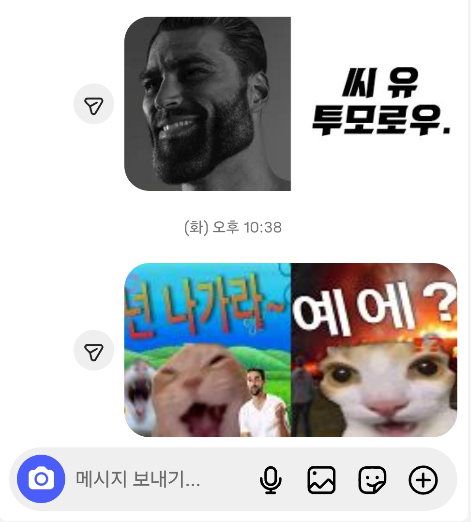

디시콘, 아카콘, 개드립콘 등 다양한 커뮤니티 이모티콘들이 흥해서 카카오톡에 수출될 때 보통 기존보다 순한맛으로 바뀌고 PC해지는 경우가 많음.
난 이게 맘에 안 들어서 그냥 디시콘이랑 개드립콘 맘에 드는 것들을 하나하나 저장해서 사용했었음.
그런데 이러다 보니 갤러리에 쌓이는 것도 보기 싫고 하나하나 받는 것도 귀찮아서 앱을 하나 출시했다.
이름하야 돚거콘
앱 기능은 간단하다.
- 앱 안에서 디시콘, 개드립콘, 아카콘 세트 주소 열기
- 받고 싶은 임티 선택
- 세트로 저장
개붕이들을 위해 시연 영상도 준비했다.
카톡에서 쓰려면 앱 안내대로 접근성이랑 이미지 직접 입력을 켜고, 채팅창 옆 버튼에서 임티를 고르면 됨.
개드립콘이나 디시콘처럼 여러 개를 선택하면 하나의 짤로 보내는 것도 가능하다.

GIF나 움짤도 가능하다.
이미지 첨부 확인한 메신저는 카톡, 텔레그램, 인스타, 디스코드, 라인, X(트위터)임. 다른 메신저도 입력창이 키보드에서 넘기는 이미지를 받으면 쓸 수 있고, 움짤 재생은 앱마다 다름.
긴빠이는 현재 아카콘, 개드립콘, 디시콘을 지원하고, 그 외에도 접속한 웹사이트에 불러온 100~1024px 정사각형 이미지를 긴빠이 쳐올 수 있다.
여태 내가 개발한 앱 중에 주변에서 호응이 제일 좋았는데 개붕이들에게도 유용하게 쓰이면 좋겠음.
유용하면 개추좀
카톡 이모티콘 장사할라고 이악물고 움짤 안 틀어주는거 ㅈ같네 ㅋㅋ